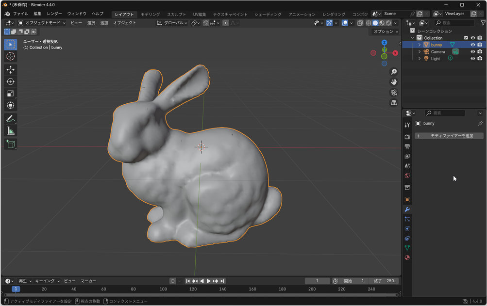
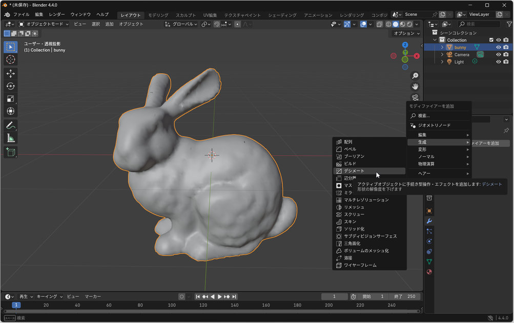
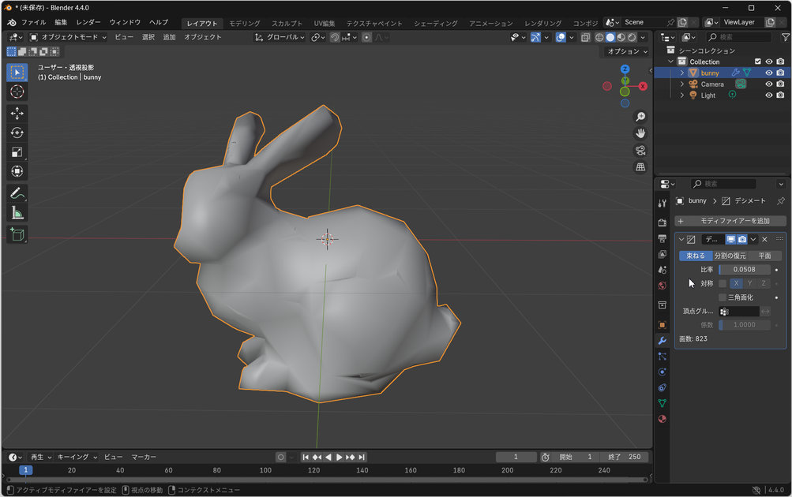

Blenderを用いたポリゴン数削減
実習室のPCにインストールされているBlenderを使って3Dモデルのポリゴン数を削減する方法を述べる． なお，BlenderはフリーソフトなのでWebからダウンロードして自分のPCにインストールすることもできる．
-
スタートメニューからBlenderを起動する
 -
左上のメニュー File -> Import -> Wavefront(.obj) (自分の読み込ませたいファイル形式を選択)
でファイルを選択後，右上のImport OBJで読み込む (あらかじめ配置されているオブジェクトが必要ない場合は，そのオブジェクトを右クリックで選択，Deleteキーで削除しておく) -
読み込んだオブジェクトだけを右クリックで選択し，右のパネルでアイコンが並んでいるところから，
Modifierを選択し，Add Modifier -> Decimate をクリック
 -
Ratioというところを左ドラッグで左右に動かして数値を変更するとメッシュが粗くなので
(Ratioの下に表示されているFace Countがポリゴン数なので参考にしつつ，適切なポリゴン数まで減らす)，
減らせたらApplyボタンをクリックして決定
 -
左上のメニュー File -> Export -> Wavefront(.obj)
で編集したデータをモデルファイルとして保存する．
Blenderの基本操作
基本操作(マウス)
- 右クリック : オブジェクト選択
- 左ドラッグ : 操作選択(直線ジェスチャで平行移動，円形ジェスチャで回転など)
- 右ドラッグ : 選択オブジェクト平行移動
- ホイール : 全体ズーム
- 中ドラッグ : 全体回転
- Shift+中ドラッグ : 全体平行移動
- Ctrl+中ドラッグ : 全体ズーム
選択操作
- 右クリック : 個別選択
- Shift+右クリック : 連続選択
- Aキー : 全選択/解除
- Bキー : 矩形範囲選択
- Cキー : 円範囲選択(マウスホイール or +/-キーで半径変更)
- Alt+右クリック : ループ選択(選択した頂点/辺/面につながる部分が選択される)
- Lキー : 接続メッシュ選択(マウスカーソルがある部分につながるポリゴンメッシュを選択)
編集操作
オブジェクトを右クリックで選択後，平行移動，回転などの操作を行う． マウスと矢印キーで位置や大きさを変更後，Enterで決定/Escでキャンセル．
- Gキー : 平行移動
- Rキー : 回転
- Sキー : 拡大縮小
- Ctrl+スペース : 3Dマニピュレータ
モードについて
- オブジェクトモード : オブジェクトを見るモード．オブジェクトそのものが選択対象
- エディットモード : 編集モード．選択状態でTabを押す．個別のポリゴンや頂点などが選択対象
- スカルプトモード : Sculpt操作 (つまんだり，引っ張ったりのような3D Brushみたいな変形)
TIPS
-
ウィンドウサイズが保存されない場合
「File」→「Save User Settings」